Monsieur Cuisine Connect ·
Dalla 0.17.8 alla 0.19.1
Le versioni successive hanno portato peeling di patate con pesatura, istruzioni per il montaggio di accessori e aggiornamenti del database di ricette su internet. Di seguito sono riportate le gocce da Connect, gli ultimi accessori grafici e un elenco di modifiche nelle singole versioni.
peeling di patate e tooltips nei programmi
Nel programma di pelatura, la bilancia attende che tu confermi di essere pronto. Questo lascia il tempo di montare il WunderPeeler dall’alto sulla lama. Dopo aver fatto la tara del recipiente, conferma prima il peso delle patate e poi la quantità di acqua aggiunta. La lettura confermata rimane sullo schermo mentre chiudi il recipiente. La guida attuale ha nove riquadri e termina mostrando come aggiungere l’acqua.
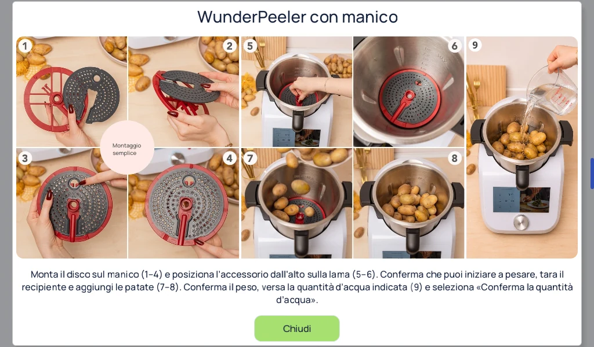
Il pulsante Accessori per questo programma apre le istruzioni per il programma selezionato. L'adattatore di taglio ha una vista degli elementi e uno schema di assemblaggio blu nella ciotola. Il tempo di taglio predefinito è di un minuto. Nelle uova di cottura si possono vedere cesti e cartucce in silicone nero opzionali. La freccia gialla mostra dove mettere lo stampo, e l'illustrazione ricorda l'olio prima di inserire le uova.

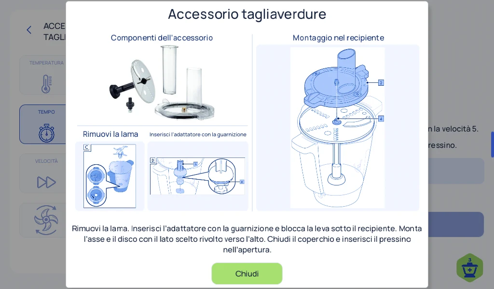

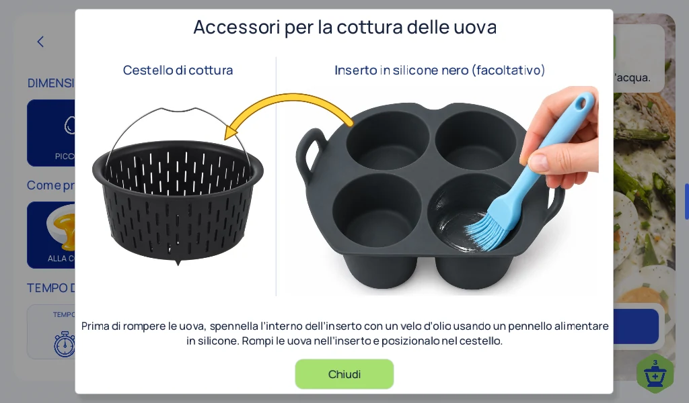
Il vapore mostra un altro elemento di vapore. Cestini per lo spettacolo di riso e Sous-video. In Sous-video, lo scudo significa una raccomandazione per fissare il sacchetto sottovuoto nel cestino, e il limone giallo distingue il suggerimento di aggiungere 30 g di succo di limone.

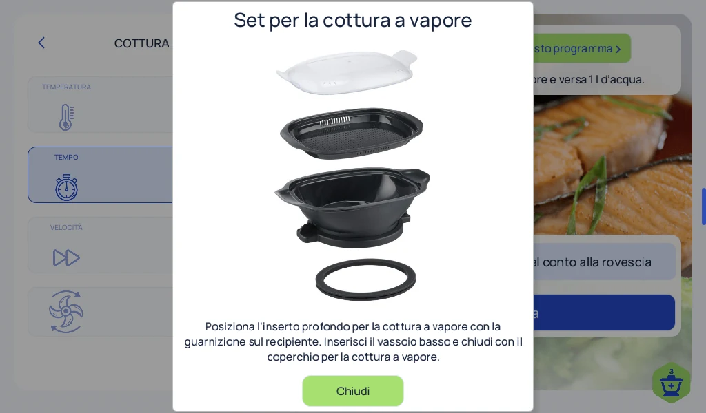

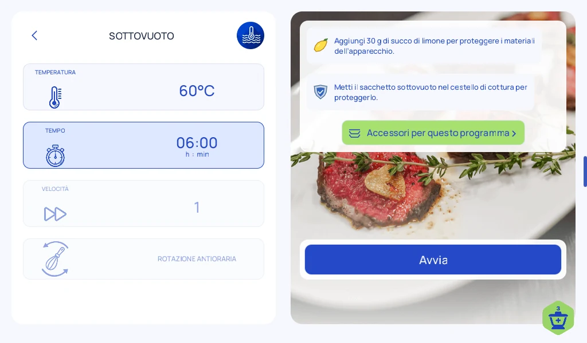

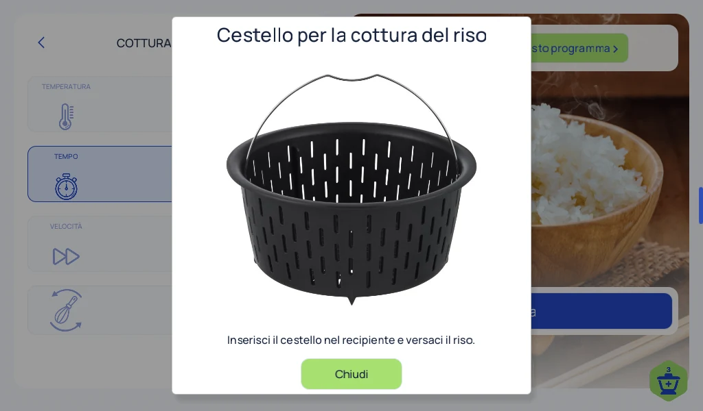

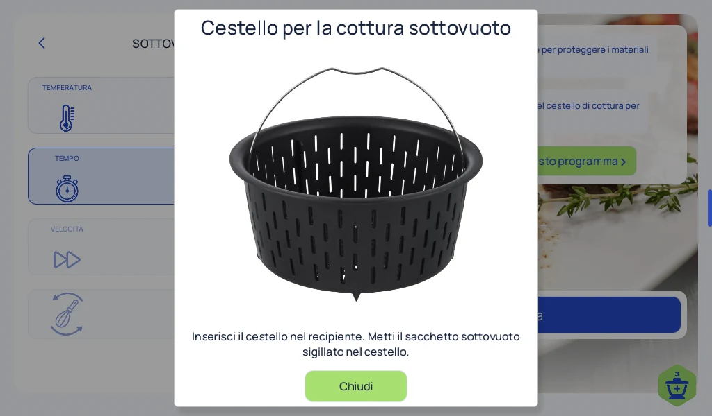
Segnale di peso, riscaldamento e lavaggio
Le impostazioni sonore sonore sono state accompagnate dal volume di apertura e chiusura del coperchio e dal volume separato del segnale per raggiungere la massa desiderata. Il prossimo emendamento rafforza il file del segnale di peso stesso. Nel riscaldamento ad acqua, il controller Connect utilizza un'impostazione di riscaldamento equivalente a 120°C per raggiungere il target di 100°C più velocemente. La lettura della temperatura rimane visibile alla fine del programma.
Nella pulizia breve e lunga, le rotazioni crescono gradualmente alla velocità prescritta, da un livello ogni mezzo secondo. Prima di cambiare direzione, la lama deve frenare per almeno tre secondi. Il messaggio di immagine farfalla appare nel programma di lavaggio, in Smoothie, in Mixing sul purée e a velocità di 5-10 in impostazioni proprie.

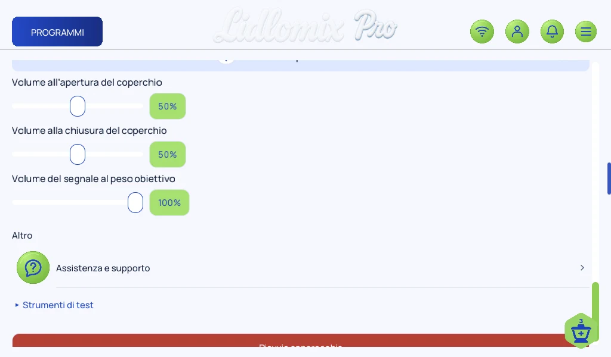

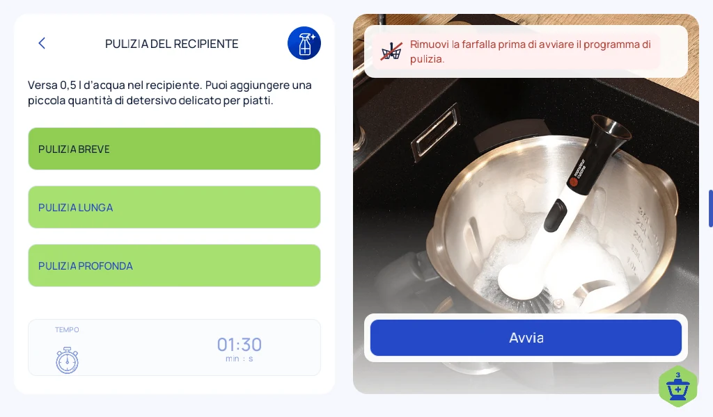
Directory e aggiornamenti su Internet
Nella pagina di catalogo tutte le ricette MC utilizzano la fonte di fabbrica. La Pro personalizzata ha una directory separata a cui vengono inviati aggiornamenti di ricette e foto. È possibile passare da un database scaricato a una directory integrata. Visualizza I miei nomi hanno filtri “All”, “Backgrounds” e “Created”.
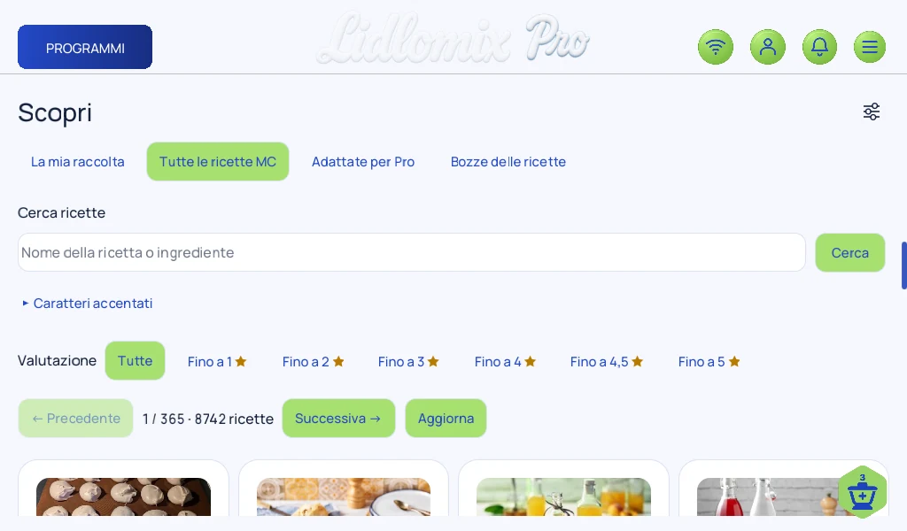
Il menu di aggiornamento separa la base di regola dall'applicazione robot. Durante il download, mostra la percentuale, e quando il controllo e lo disimballaggio mostra il nome della fase. Il pulsante “Check Updates” è allineato con gli altri campi. Su Connect, ho controllato di scaricare una revisione stabile del database e di andare al messaggio “Catalogo verificato”. L'installazione dei regolamenti è confermata dall'utente. Durante questo test, un aggiornamento del database è stato disponibile in un canale stabile.
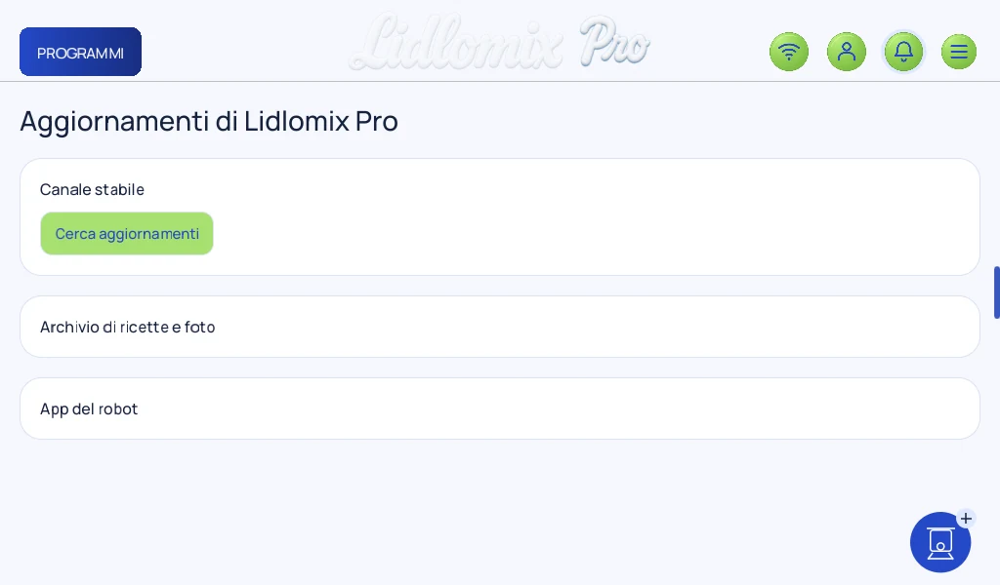
Impostazioni, Firefox e pezzi di ricambio
Le impostazioni hanno più grandi icone in stile piastrelle sulla schermata del programma. Le icone, gli account, gli aggiornamenti e i menu della barra superiore sono più piccoli. A sinistra, il pulsante continua a commutare “Programmi” e “Provisioni”. La freccia inversa aggiuntiva è stata rimossa.
Il pulsante di accesso all'account di Monsieur Cuisine lancia il modulo di login Lidl direttamente in Firefox. Sullo stesso schermo, il pulsante "Apri negozio con parti di ricambio" porta alla categoria Connect nel negozio Monsieur Cuisine. Sul dispositivo, ho controllato l'apertura di entrambi i lati.
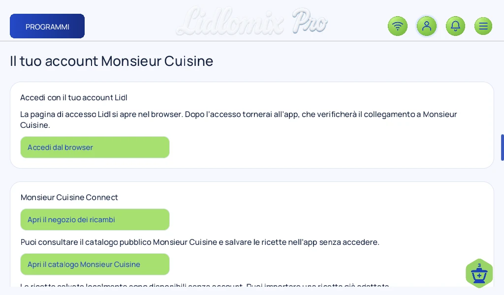
Elenco delle modifiche da 0.17.8
- 0.17.8 — volume di rubinetto predefinito del 10%. Entrata precedente e goccia.
- 0.17.9 — il primo programma di sbucciatura di patate con WunderPeeler di pesatura, guida e schermo di supporto.
- 0.18.0 — ordine di intestazioni e campi in programmi di peeling e taglio vegetali.
- 0.18.1 — Versione di prova di peeling con cambio automatico di direzione durante il ciclo.
- 0.18.2 — cambiamento nella prima fase del ciclo di prova.
- 0.18.3 — prima compilazione con ulteriori suoni di coperchio e realizzazione di massa.
- 0.18.4 — cursori di volume separati per aprire il coperchio, chiudendo il coperchio e guadagnando peso.
- 0.18.5 – regolare i suoni e verificare se le impostazioni del volume vengono salvate dopo l'aggiornamento.
- 0.18.6 — la prima versione del robot con uno schermo di aggiornamenti di Internet e supporto del canale beta.
- 0.18.7 — tentare di scaricare e aprire un aggiornamento di prova della directory di foto.
- 0.18.8 — Tenta di aumentare il database e di trasmettere un aggiornamento verificato al programma di installazione Android.
- 0.18.9 — separazione delle due fonti di ricette, Tutte le ricette MC e Adattate per Pro.
- 0.19.0 — una vista separata di “I miei nomi” e i suoi filtri in Su misura Pro.
- 0.19.1 — la transizione del client di aggiornamento a un canale stabile e un tentativo di un pacchetto di base reale su Connect.
- compilation successiva 0.19.1 — conferma di pesare nelle modifiche di peeling, riscaldamento e lavaggio, grafica accessori, avvisi di farfalla, icone aggiornate, login in Firefox, negozio di parti e barra di aggiornamento.
Torna alla cronologia degli aggiornamenti · Condividi i tuoi commenti sul forum